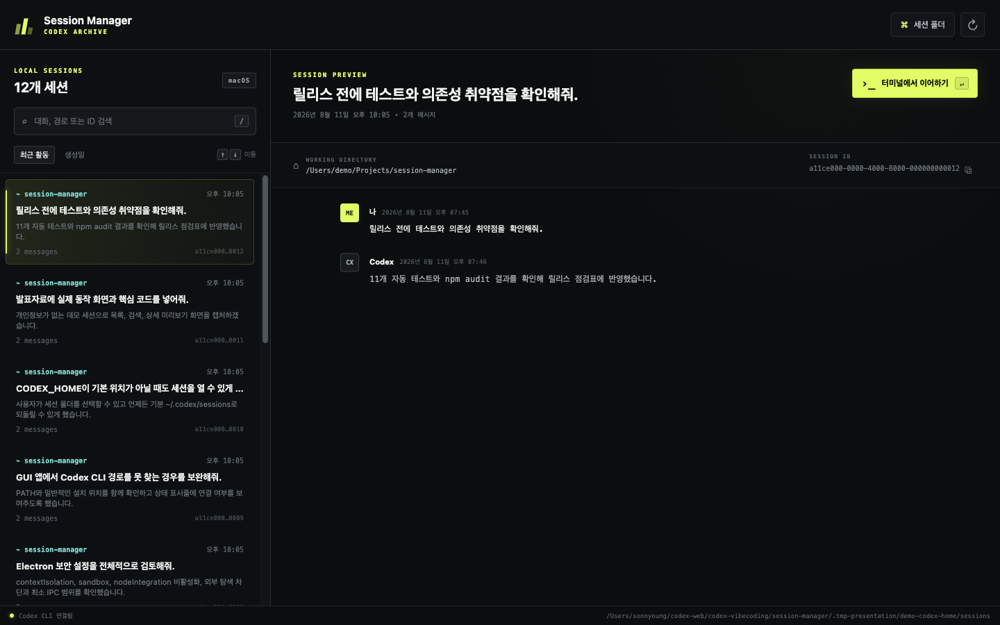
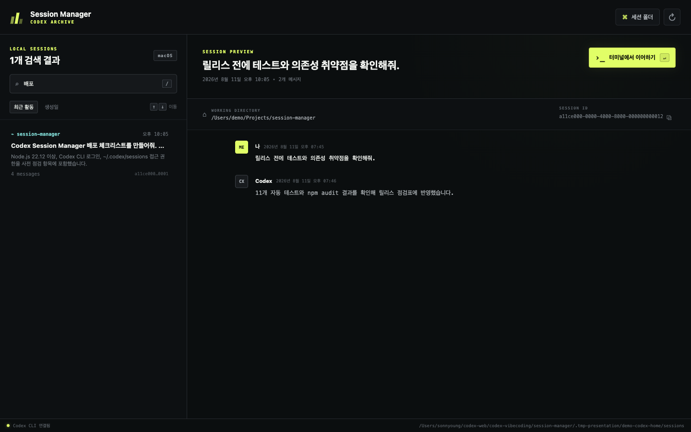
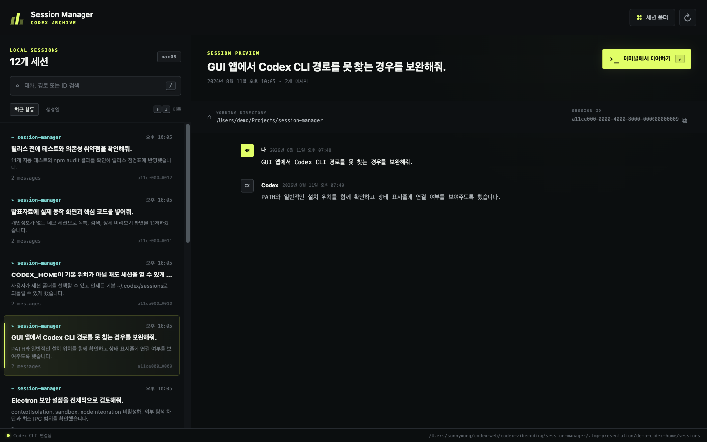

Find
~/.codex/sessions의 JSONL을 읽고 최근 활동순으로 목록화합니다.
1.1.0
로컬 세션을 찾고, 읽고, 이어 쓰는
Windows 중심 · macOS 호환 데스크톱 앱
~/.codex/sessions의 JSONL을 읽고 최근 활동순으로 목록화합니다.
첫 요청, 최근 답변, 작업 경로와 전체 대화를 한 화면에서 확인합니다.
선택한 UUID를 검증한 뒤 새 터미널에서 codex resume을 실행합니다.
node --versionElectron 43의 엔진 요구 사항을 충족합니다.
codex --version터미널에서 명령이 실행되고 로그인되어 있어야 합니다.
~/.codex/sessionsCodex CLI에서 최소 한 번 대화를 시작합니다.
read access앱이 sessions 폴더와 JSONL 파일을 읽을 수 있어야 합니다.
npm install -g @openai/codexcodex# Windows PowerShell · 프로젝트 루트
cd session-manager
# Electron 및 빌드 도구 설치
npm install
# Codex Session Manager 1.1.0 실행
npm start~/.codex/sessions

마우스 없이 바로 검색을 시작합니다.
현재 필터 결과 안에서 세션을 이동합니다.
80개 단위 렌더링과 독립 스크롤로 대규모 목록을 처리합니다.
변경된 JSONL과 캐시를 다시 확인합니다.
codex resume <SESSION_ID>전체 UUID 형식만 허용해 명령 주입을 차단합니다.
세션에 저장된 cwd가 존재하면 그 위치에서 시작합니다.
macOS Terminal, Windows 새 명령창, Linux 터미널 후보를 사용합니다.

검색, 목록, 미리보기, 키보드 입력
허용된 메서드만 renderer에 공개
파일 읽기, 설정, 터미널 실행
async function readLines(filePath, onRecord) {
const input = fs.createReadStream(filePath, {
encoding: 'utf8'
});
const lines = readline.createInterface({
input,
crlfDelay: Infinity
});
for await (const line of lines) {
if (!line.trim()) continue;
try {
await onRecord(JSON.parse(line));
} catch (error) {
// 깨진 JSON 한 줄만 건너뛴다.
if (error instanceof SyntaxError) continue;
throw error;
}
}
}세션 파일이 커져도 메모리에 전체 파일을 올리지 않습니다.
일부 줄이 손상되어도 나머지 대화는 계속 분석합니다.
event_msg의 user/assistant 메시지만 미리보기에 노출합니다.
const PAGE_SIZE = 80;
function moveSelection(direction) {
const sessions = filteredSessions();
let index = sessions.findIndex(
(item) => item.id === state.selectedId
);
index = Math.max(0, Math.min(
sessions.length - 1,
index + direction
));
// 선택 위치가 표시 범위를 넘으면
// 다음 80개 묶음까지 렌더링한다.
if (index >= state.visibleLimit) {
state.visibleLimit = Math.ceil(
(index + 1) / PAGE_SIZE
) * PAGE_SIZE;
}
selectSession(sessions[index].id, true);
}선택 카드가 화면 안에 보이도록 자동 스크롤합니다.
Page Up/Down은 현재 뷰포트 높이에 맞춰 건너뜁니다.
필요한 카드까지 표시 범위를 즉시 확장합니다.
function validatedSessionId(value) {
const id = String(value || '').trim();
if (!FULL_UUID_PATTERN.test(id)) {
throw new Error(
'유효하지 않은 세션 ID입니다.'
);
}
return id;
}명령 문자열에 임의 문자가 들어가기 전에 전체 UUID 형식을 강제합니다.
if (process.platform === 'darwin') {
// Apple Terminal에서 새 셸 실행
launchDetached('osascript', args);
} else if (process.platform === 'win32') {
// Windows 새 명령창 실행
launchDetached('cmd.exe', args);
} else {
// Linux 터미널 후보 탐색
launchDetached(terminal[0], terminal[1]);
}앱 UI는 같지만 터미널을 여는 방식은 각 운영체제에 맞게 분리됩니다.
$env:CODEX_HOME="$HOME\.codex"앱이 CODEX_HOME\sessions를 읽습니다. 또는 UI의 “세션 폴더” 버튼으로 직접 선택합니다.
$env:CODEX_PATH="$env:APPDATA\npm\codex.cmd"GUI 앱의 PATH가 터미널과 다를 때 Codex 실행 파일의 절대 경로를 지정합니다.
sessions/ 자동 정규화→settings.json에 경로만 저장→“기본 경로”로 복구대화 내용과 인증 정보는 앱 설정 파일에 복사하지 않습니다. 선택한 세션 경로만 저장합니다.
npm run dist:winx64 NSIS 설치 프로그램과 Portable EXE를 생성합니다.
npm run dist실행 중인 운영체제용 기본 설치 파일을 생성합니다.
npm run dist:macIntel/Apple Silicon용 DMG와 ZIP을 생성합니다.
CODEX_HOME, 폴더 권한, “세션 폴더” 선택을 확인합니다.
codex --version 확인 후 필요하면 CODEX_PATH를 지정합니다.
개발본은 npm start로 실행하고 배포본은 서명·공증합니다.
앱 본체는 PE32+ x64 패키징 성공. NSIS 설치·실행은 Windows PC에서 최종 검증합니다.
Windows에서는 PowerPoint/브라우저, MacBook에서는 Keynote/Safari로 같은 자료를 볼 수 있습니다.
npm startnpm run dist:win